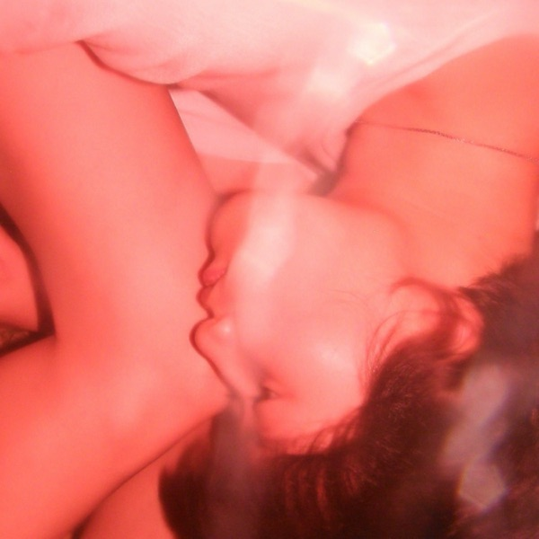
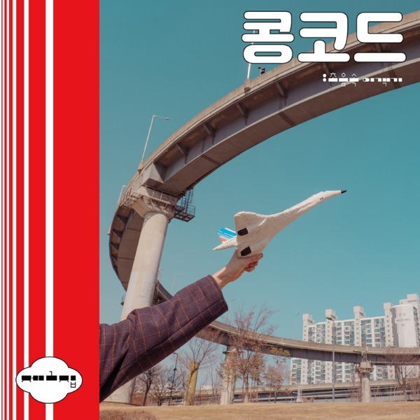
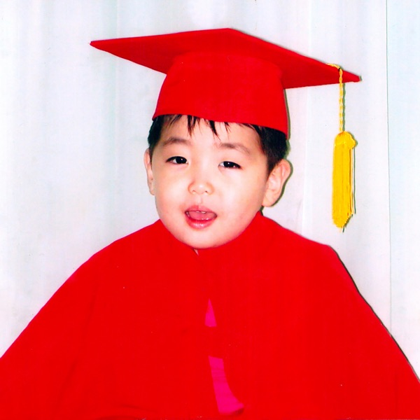
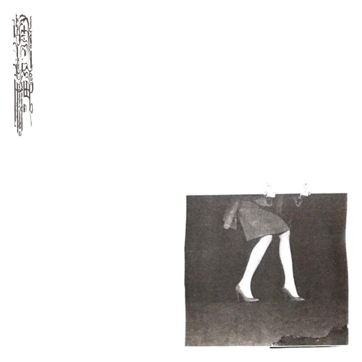
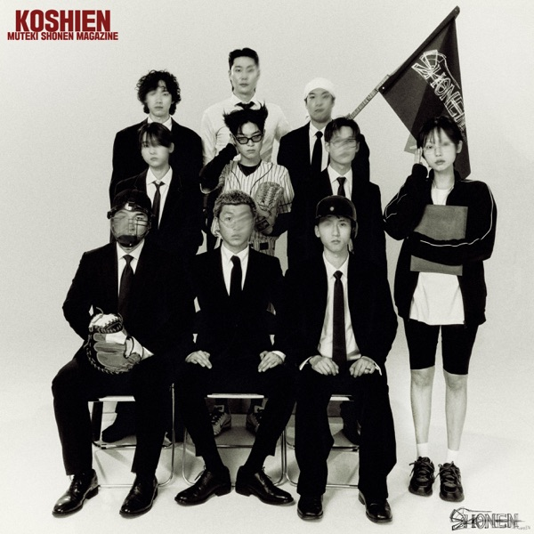
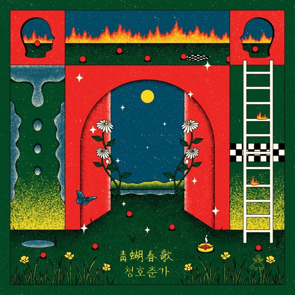
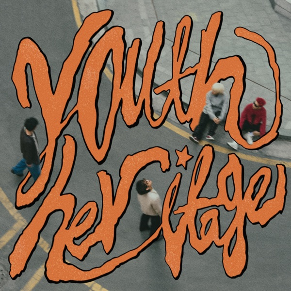
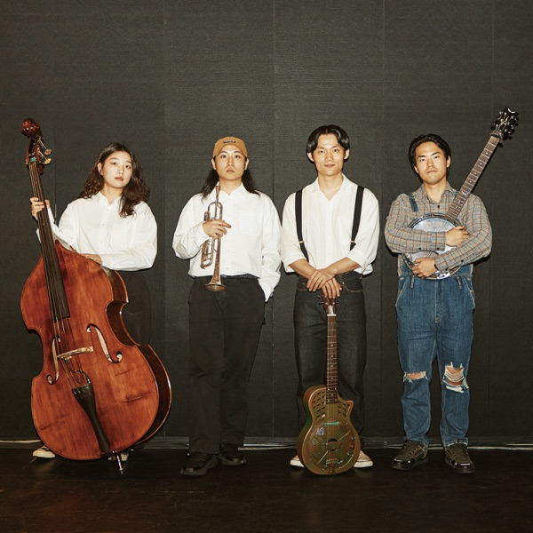

GROOVE · Special Feature · 2026.07
비바체가 골라본 2020년대 한국인디












2021 – 2026 · 열두 장의 앨범 · 글 비바체
250 이오공
결론부터: 2020년대 한국 일렉트로닉의 기준점이다. 뽕을 촌스러움의 기호가 아니라 소리의 재료로 다뤘고, 그 재료의 출처 — 이박사*의 키보디스트 김수일 — 까지 데려와 합성해냈다. 패러디였다면 45분을 못 버텼을 것이다. 이건 흉내가 아니라 합성이다.
* 이박사 — 뽕짝 메들리로 컬트적 인기를 얻은 가수. 김수일은 그 사운드를 만든 키보디스트.
집사 ZIP4
편성부터가 입장이다: 피아노와 베이스를 빼고 수자폰*과 브라스로 저음을 채웠다. 1920년대 뉴올리언스의 문법을 흉내가 아니라 체화한, 국내에선 대체재가 없는 팀. 여섯 명 전원이 노래하는 현장감이 음반에 그대로 있다.
* 수자폰 — 행진 밴드용 대형 저음 금관악기. 몸에 두르듯 메고 연주한다.
봉제인간 BONJAEINGAN
곡마다 전혀 다른 방향으로 튀는 앨범이다. 술탄 오브 더 디스코·혁오·장기하와 얼굴들이라는 이력은 참고사항일 뿐, 결론은 곡 안에 있다. 쪼개 듣지 말고 통째로 들어야 한다.
유령서점 GHOST BOOKSTORE
콘셉트 앨범의 성패는 유지력인데, 이건 13곡 내내 서부극의 결을 놓지 않는다. 사막과 말과 소용돌이가 소재가 아니라 지형으로 쓰인다. 가장 최근에 도착한 앨범 — ‘Eddy’부터 들으면 빠르다.
Listen
들으러 가기
▶ 플레이리스트 재생 — Spotify02250 — 뽕Spotify ↗
03콩코드 — 초음속 여객기Spotify ↗
04곽태풍 — 나는야 락스타 !Spotify ↗
05집사 (ZIP4) — Put On A TieSpotify ↗
06khc/moribet — 전파납치Spotify ↗
07봉제인간 — 12가지 말들Spotify ↗
08김승주 — 고시엔Spotify ↗
09블루터틀랜드 — 청호춘가Spotify ↗
10팔칠댄스 — Youth HeritageSpotify ↗
11천진우 — 나는 기계가 싫어요Spotify ↗
12유령서점 — 4 Steps ’Fore the SpiralSpotify ↗